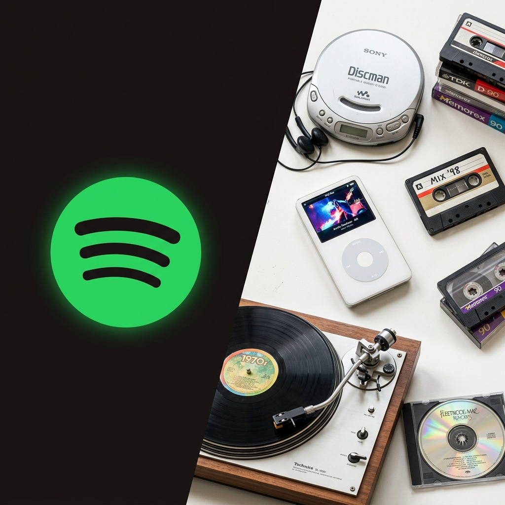

Open your phone. Press play on any song. Now ask yourself: do you own it? Most people under 30 have never bought a song outright. Not downloaded it, not kept it. iTunes gave way to Spotify. DVD shelves became Netflix queues. Amazon replaced boxes of paperbacks with a monthly fee for Kindle Unlimited. Each trade felt reasonable at the time, more music for less money, thousands of movies in one place. Nobody stopped to ask what was actually being given up. What got given up was ownership. And ownership of media is not just a personal finance question. It is a question about who gets to decide what survives.
Who Controls What We Remember?
The Subscription Economy and Cultural Memory
The shift from owning media to renting it has quietly transferred control of cultural memory away from individuals and into the hands of a small number of private corporations with every financial reason to change, delete, or restrict what you thought you bought.
This argument considers how that transfer happened, what it costs us, and whether it can be reversed. The major stakeholders in this story are consumers, the corporations running streaming platforms (Spotify, Netflix, Amazon, Apple), and the institutions public libraries, digital archivists, the Internet Archive scrambling to fill the preservation gap that private platforms have no incentive to close.
The argument here is not that streaming is bad or that physical media was perfect. It is that accessibility and ownership are not the same thing, and a culture that only borrows its own history is entirely at the mercy of whoever holds the lease. Millions of people are already finding this out the hard way: files they paid for, gone. Platforms they trusted, shut down. Music and film that existed last year, simply missing.
The Ownership Illusion
The subscription model does not just limit what you can do with media, it strips any claim to ownership entirely and hands it to the platform. This is not a subtle legal fine print problem. Jacobin put it plainly, writing that "transitioning from tangible items to intangible digital copies housed in the cloud has robbed consumers of whatever ownership they might once have claimed over media" ("Digital Ownership and Physical Media"). That word "robbed" is deliberate. It names a transfer of power, not a neutral market shift.
The loss is concrete. In 2023, customers who had "purchased" movies through Vudu found certain titles quietly removed from their accounts. Microsoft shut down its MSN Music store in 2006, leaving customers holding DRM-locked files they could no longer play. Google Play Music closed in 2020, taking years of uploaded personal libraries with it. The pattern repeats: you pay, the platform closes, the content disappears.
"A quorum of twentysomethings across the country did not come together and democratically elect Chappell Roan as this year's new pop star." Cat Cárdenas, Slate
What makes this more than a consumer complaint is what it reveals about the structure of digital culture. When people cannot own media in any real way, the feeling of entitlement gets redirected onto the artist instead. Cat Cardenas, writing in Slate about Chappell Roan's fraught relationship with her fanbase, describes how fans say things like "we made her famous" as though their streaming numbers gave them a claim on her as a person. But as Cardenas points out, the audience consumed her through a platform that fed her popularity into an algorithm. The subscription model does not just strip ownership from files. It redirects what fans want to possess onto the human being behind the content. That is a symptom of a deeper problem.

Corporate Custodians Without a Mandate
The corporations that have filled the space left by personal ownership have not acted like neutral custodians of culture and there is no legal reason they should. David French, writing in an opinion column for the New York Times, observes that Big Tech companies, "for all of [their] high-minded rhetoric about making the world a better place and doing no evil, can be just as greedy and grasping as countless other companies in countless other industries" (French).
French wrote this piece about social media liability, but the argument applies equally in the streaming context. When Spotify decides a song is no longer licensed in your region, or when a platform removes a film during a contract dispute, those decisions happen in a licensing meeting, not with cultural preservation in mind. Algorithms determine what gets promoted and what drifts to the back of the catalog, effectively deciding what gets heard and what gets forgotten.
The infrastructure now storing most of our collective cultural output music, film, journalism, and podcasts is private, profit-driven, and subject to change without notice. No legal obligation exists requiring any of these platforms to keep what you thought you purchased. This is not an abstract risk. It is a structural condition. The same corporations that market themselves as cultural gatekeepers will, when a contract expires or a revenue model shifts, quietly delete the record. French's broader warning about corporate virtue-signaling applies precisely here: the language of access and democratization is real right up until it becomes inconvenient. When it does, the content disappears and the terms of service which you agreed to say the platform owes you nothing.
The Accessibility Defense and Its Limits
Subscription platforms deserve a real defense before that defense is taken apart. The accessibility argument is not nothing.
A teenager anywhere in the country can hear any album recorded in the last century. That is something physical media never delivered. The costs that once made building a personal music or film library impossible for most people dropped to near zero. Forbes has called subscription-based models "a cornerstone for the industry's future," and by the numbers, the reach is hard to argue with (Fatemi).
But accessibility and preservation are not the same. A song that streams today can be removed tomorrow through a licensing dispute, and the listener loses it with no warning or compensation. The library grows and shrinks not based on cultural importance but on contract cycles and platform economics. Accessibility without permanence is just borrowing. A teenager who discovers a film through Netflix and builds their understanding of cinema around it has no guarantee that film exists next year. What they experienced was a loan, not a record.
The honest version of the pro-subscription argument is that access is better than nothing. That is true. But it does not answer the preservation question, and conflating the two as the industry routinely does obscures how much has already been lost.
The Scale of Digital Erasure
The stakes go beyond individual frustration. According to BBC Future, research shows that a quarter of all web pages created between 2013 and 2023 have already disappeared, one in four, in a single decade (BBC Future). The Internet Archive and a small number of digital archivists are working to recover what they can, but they are outpaced by the speed at which platforms shut down or pull content without warning.
That statistic raises an obvious question: what happens to the cultural record when streaming catalogs age the way websites do? The disappearance is not random. Algorithms and licensing decisions shape which voices get preserved and which ones get dropped. A niche film from a small studio, a podcast from an independent journalist, a piece of music from an artist whose contract lapsed. These are exactly the kinds of cultural artifacts that physical collections once protected and that streaming platforms have no incentive to maintain.
The 20th century built a durable cultural archive because people kept things. Records on shelves survived the store that sold them. Books outlasted the publisher. A private streaming library cannot make that promise.
Connected Systems, Connected Failures
The ownership illusion, corporate indifference, and digital erasure are not three separate problems. They are the same problem operating at different levels. When Jacobin describes the stripping of digital ownership, when French warns about corporations dressed in the language of public good, and when the BBC reports that a quarter of the web has already vanished, they are all describing the same structural condition: culture is now stored on private infrastructure with no preservation mandate.
The Chappell Roan example from Cardenas makes this human. When ownership of media becomes impossible, people redirect that possessive feeling toward artists, toward personalities, toward anything they can claim. That is what a generation raised on subscriptions looks like, not passive, but unable to hold anything. The emotional dynamic Cardenas describes is what happens when the physical, keepable relationship between a person and their cultural record has been replaced by a monthly fee that can end at any time.
These are connected. The legal condition (you own nothing) produces the cultural condition (you grasp at what you can), and both are driven by the same corporate logic (the platform decides what stays).
Building the Infrastructure We Need
The subscription economy made media cheaper and easier to find. It also handed control of cultural memory to companies with no obligation to maintain it. The path forward is not a full return to physical media. What it requires is legal and institutional intervention at the level where the problem actually lives.
Public libraries have a mandate to lend and preserve books. No equivalent protection exists for digital media. A licensing framework that treated digital purchases as actual purchases, with the right to keep, transfer, and archive what you paid for, would be a starting point. Expanding public funding for institutions like the Internet Archive, which is doing preservation work that private platforms have no financial reason to do, would be another.
The 20th century built its cultural record because people kept things. The question now is whether we are willing to build that infrastructure for the 21st and whether we will build it before another quarter of what we made disappears.
Works Cited
- BBC Future. "The Archivists Battling to Save the Internet." BBC, 12 Sept. 2024, www.bbc.com/future/article/20240912-the-archivists-battling-to-save-the-internet
- Cárdenas, Cat. "Chappell Roan Is Trying to Be a New Kind of Pop Star. Will Her Fans Let Her?" Slate, 22 Aug. 2024, slate.com/culture/2024/08/chappell-roan-fan-behavior-pop-star-parasocial-relationships.html
- Fatemi, Falon. "Why the Future of Media Is Subscription-Based." Forbes, 13 Dec. 2023, www.forbes.com/sites/falonfatemi/2023/12/13/why-the-future-of-media-is-subscription-based/
- French, David. "Don't Cheer Too Hard for the Facebook Verdicts." The New York Times, 29 Mar. 2026, www.nytimes.com/2026/03/29/opinion/free-speech-social-media-court-ruling.html
- Jacobin. "Digital Ownership and Physical Media." Jacobin, Jan. 2025, jacobin.com/2025/01/digital-ownership-physical-media-control